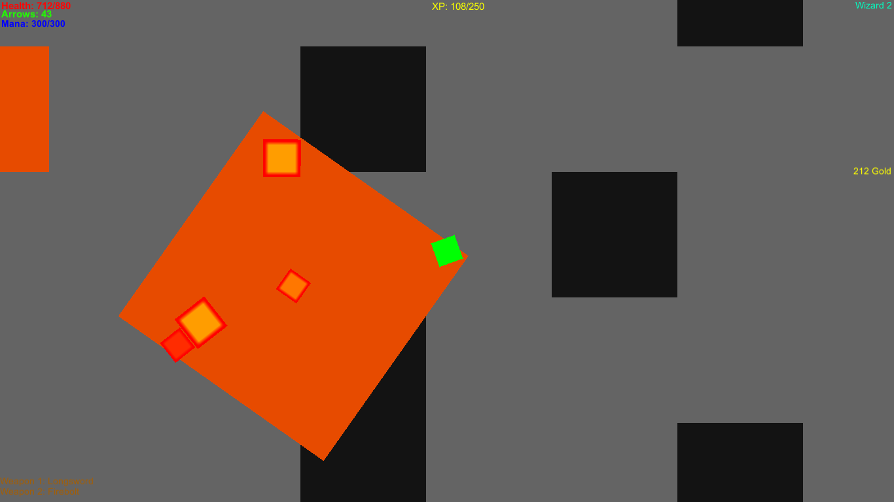
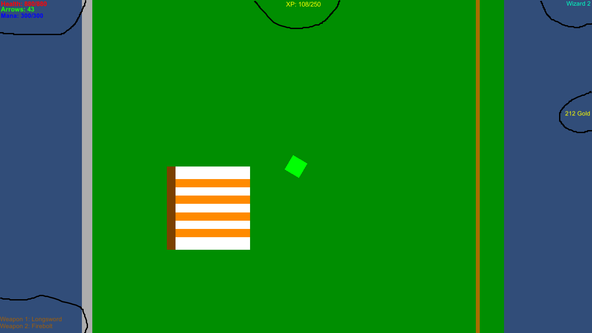
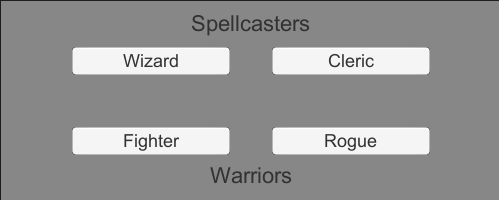

v0.1 Released!
by Rgamer43 - August 11, 2020
Hey everyone! Yesterday I set up this website and added the downloads for version 0.1 of Random Dungeon! It's a game where you play an adventurer
explorinig dungeons and fighting the monsters that inhabit them, so you can claim their treasure.

Once you download the .zip files from the main page, you'll need to extract the contents, then run the .exe file inside the new folder.
That should open up the game. You can click "New Game", which will pull up a menu to choose your class. I'll go into more detail on the classes
below.

After that, you'll be in the hub, an area that will eventually have shops but for now it just has the blacksmith and the dungeon entrance.
Talk to the blacksmith to accept his quest. You can't buy from him now; you'll have to complete the quest by killing 20 goblins (I think they're
reddish orange.). At the top of the map, there will be some grey rocks with a black rectangle at the front. If you touch the rectangle you'll base
sent to the dungeon. The men can be accessed by pressing escape. This is where you can save your game. In the menu, you can also return to
the hub, or go back to the main menu. You can press 1 or 2 to switch weapons.

The game currently has four classes, Wizard (my personal favorite), Cleric, Fighter, and Rogue.
Wizard
The wizard is a versatile master of the arcane. Their capabilities range from shooting fire bolts to creating walls to
block off enemies (not actually implemented yet). They can use spells and have increased max mana over the other
spellcasting class, clerics.
Cleric
Clerics can heal themselves and curse their enemies. They have health regeneration and limited spellcasting.
Fighter
Fighters are warriors. They have high health that quickly increases.
Rogue
Rogues are thieves and tricksters. They are faster than other classes and can outrun enemies that the
others can't.